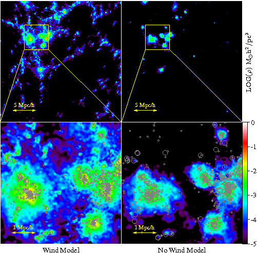
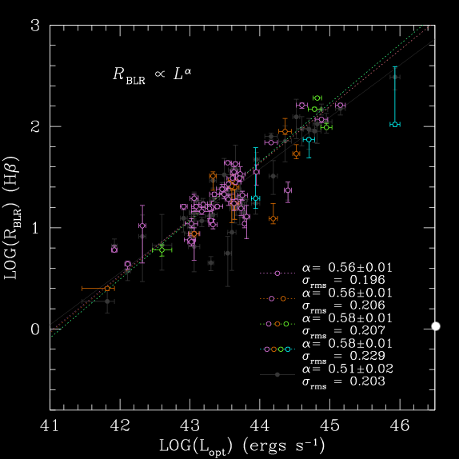

[3] Cluster-Galaxy Cross-Correlation in Redshift Space: I. Modeling of Galaxy Infall onto SDSS Groups
Zu, Y., & Weinberg D.H in prep
The movie below shows the variation of galaxy infall kinematics (joint distribuion of radial and tangential velocity) as a function of radius around clusters. Measurements from simulation on the left, and the model on the right.
[1] Intergalactic Dust Extinction in Hydrodynamic Cosmological Simulations
Zu, Y., Weinberg, D. H., Davé, R., Fardal, M., Katz, N., Kereš, D., Oppenheimer, B. D. 2011, MNRAS, 412, 1059

We study how the intergalactic dust should be distributed based on the
observation from Menard et al (2010) and cosmological hydrodynamic
simulations.
Figure on the left shows the cosmic metalicity distribution in our
wind(left) and no-wind(right) simulations. The bottom panels are the zoom-in
versions of the clusters on the top. Circles indicate the positions of the
galaxies, with the radii proportional to the stellar masses.
We found that it is very hard to explain the observed intergalactic dust
distribution and abundance using the simulations without winds, and it
requires a dust-to-metal ratio of 0.24 with the wind simulations to match to
the data.
Zu, Y., Kochanek, C. S., & Peterson, B. M. 2010, ApJ, 735, 80

We developed a new reverberation mapping technique to infer lags in the
AGN emission lines. Assuming the emission light curves are lagged, smoothed,
and scaled versions of the continuum light curve, and the quasar variability
can be well described by a damped random walk, we can statistical
interpolate the observed light curves and align each other to find the
best-fit parameters for the transfer functions of emissoin lines.
Figure on the left compares the new lag estimates from our method
JAVELIN (formerly known as
SPEAR)
and from correlation based methods. We recovered lags from all the measured light
curves and removed some old outliers from the lag-luminosity relationship.
We study the environmental effect on the clustering of galaxies in both
real and redshift spaces using
semi-analytical galaxy formation models, by shuffling the galaxy content
between halos of similar masses, both with and without retaining the 1-halo term.
Figure on the left compares the two point correlation functions of the
original and shuffled galaxy samples, defined by different redshifts and
magnitude limits. Each correlation is decomposed into five components,
including 1-halo central-satellite, 1-halo satellite-satellite, 2-halo
central-central, 2-halo central-satellite, and 2-halo satellite-satellite
pairs.
We found around 5 percent impact from the environment on the two point
correlations of galaxies through this shuffling technique.